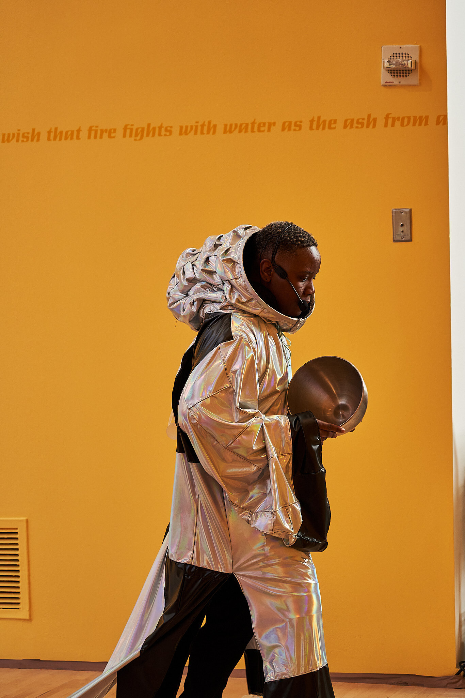

Photo credit: Henry Art GalleryCHARI is an NY Emmy–nominated composer, interdisciplinary artist, humanities scholar, and media archivist. Their practice explores alternative archival methods through a Black diasporic lens, creating immersive worlds across sound, installation, and performance. Working at the intersection of art, technology, and critical theory, CHARI engages technology as subject, tool, collaborator, and adversary, interrogating its role in shaping memory, embodiment, and systems of knowledge.
Their work often takes the form of performative and spatial archives, creating environments that challenge fixed, institutional notions of preservation by foregrounding lived experience, vernacular practice, and collective participation. Drawing from familial materials, oral histories, and everyday forms of Black embodied knowledge, CHARI develops systems that are dynamic and responsive, systems where memory is not stored, but activated and transformed with care and stewardship. Sound and experimental composition function within this practice as methods for structuring experience, carrying memory, and shaping immersive environments.
Projects such as MUTATE reimagine architectural space as a living archive, while Scream Church mobilizes the voice as a site of ritual, release, and collective expression. In Open In, Open Up, Open Out, CHARI creates sonic environments that operate as both performance and social experiment, inviting audiences into practices of deep listening and embodied reflection. Their photographic series Grief in Passing turns toward intimate registers of loss, attending to the quiet, fleeting moments of mourning and the textures of grief as it unfolds in everyday life.
Across their practice, CHARI is invested in developing new media methodologies that center the human within post-human, digital, and artificial futures.
Contact: connect@chari.studio
Selected Press:
The Art of Making AI Less Biased, ART+TECHNOLOGY Series by Hyundai/ Bloomberg
Awards:
University of California Committee on Research, 2024, 2026
UC Santa Cruz Arts Division Grant Advancing Faculty, 2025
Center for Cultural Innovation Investing in Artist Innovation, 2025
NY Emmy Nomination, Composition & Arrangement, 2022
Henry Art Gallery Ritual Fellow, 2022
UW Sustainability Fund, 2022
NewMusicUSA Creative Development Fund, 2022
UW Black Opportunity Fund Award, 2022
UW Howard P. Dallas Fellow, 2020
Nevada Arts Council Fellowship, 2013
Nevada Art Council Fellow, 2013